Introduction¶
TensorLDA uses tensor decomposition method to estimate parameters in a Latent Dirichlet Allocation model. This introduction will focus on how to learn LDA parameters with tensor decomposition method.
LDA Parameters¶
First, we define LDA parameters:
 : number of topics
: number of topics : vocabulary size
: vocabulary size- 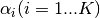 : dirichlet prior for topic i
 : sum of topic priors (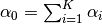)
: sum of topic priors (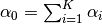)- 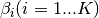 : word distribution for topic i
In the model we assume is given and our goal is to estimate  and 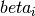 from a given corpus.
and 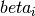 from a given corpus.
Data Moments¶
Since the model is based on decomposition of third order tensor, another assumption here is each document contains at least 3 words. Let  ,
,  , and
, and  be any triple of words in a document, the first three order data moments
be any triple of words in a document, the first three order data moments  ,
,  , and 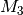 are defined as:
, and 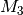 are defined as:
![M_1 = & \mathop{\mathbb{E}}[x_1] \\
M_2 = & \mathop{\mathbb{E}}[x_1 \otimes x_2] - \frac{\alpha_0}{\alpha_0 + 1} M_1 \otimes M_1 \\
M_3 = & \mathop{\mathbb{E}}[x_1 \otimes x_2 \otimes x_3] \\
& - \frac{\alpha_0}{\alpha_0 + 2} (
\mathop{\mathbb{E}}[x_1 \otimes x_2 \otimes M_1] +
\mathop{\mathbb{E}}[x_1 \otimes M_1 \otimes x_3] +
\mathop{\mathbb{E}}[M_1 \otimes x_2 \otimes x_3]) \\
& + \frac{\alpha_0^2}{(\alpha_0 + 2)(\alpha_0 + 1)} M_1 \otimes M_1 \otimes M_1](_images/math/46d31ad505e9123fdd6315f7d69ad14e16a6a3e3.png)
Based on dirichelet priors, we can derive the relationship between data moments and model parameters as:
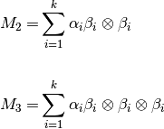
Whitening¶
As we know  and 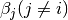 are not necessary orthogonal, the deccomposition of may not be unique. Therefore, we need to orthogonize
and 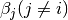 are not necessary orthogonal, the deccomposition of may not be unique. Therefore, we need to orthogonize  first.
first.
To do this, we find orthogonal decomposition of where 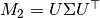. Then we can define whitening matrix 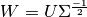. And since 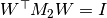, 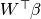 is orthogonal.
The thrid order tensor after whitening is:
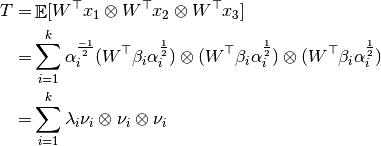
Another advantage of whitening is dimension reduction. After whitening, the tensor dimension is reduced from 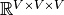 to 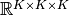.
Tensor Decomposition¶
Currently we implemented “Robust tensor power method” described in Reference [1]. Assuming tensor  is orthogonally decomposable, we can estimate one (eigenvalue, eigenvector) pair with power iteration update. Once a pair (
is orthogonally decomposable, we can estimate one (eigenvalue, eigenvector) pair with power iteration update. Once a pair ( , 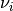) is found, we deflate tensor 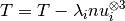 and compute the next (eigenvalue, eigenvector) pair. For details, check algorithm 1 in reference [1].
, 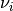) is found, we deflate tensor 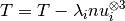 and compute the next (eigenvalue, eigenvector) pair. For details, check algorithm 1 in reference [1].
Parameter Reconstruction¶
Once we get all 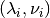 pair, reconstruction is simple:
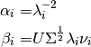
References:
- “Tensor Decompositions for Learning Latent Variable Models” A. Anandkumar, R. Ge, D. Hsu, S. M. Kakade, M. Telgarsky, 2014
- “Scalable Moment-Based Inference for Latent Dirichlet Allocation” C. Wang, X. Liu, Y. Song, and J. Han, 2014
- “Latent Dirichlet Allocation” D. Blei, A. Ng, M. Jordan, 2003
- “Latent Dirichlet Allocation (Scikit-learn document)”